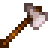
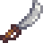

Búsqueda de herramientas:
Herramientas
| Imagen | Nombre | Precio | Ingredientes | Mejoras |
|---|---|---|---|---|
 |
Azada | Herramienta inicial | N/A | |
 |
Azada de cobre | 2000 | Lingote de cobre | Aumenta el área máxima de efecto en 3 casillas, en una fila delante de ti. |
 |
Azada de acero | 5000 | Lingote de acero | Aumenta el área máxima de efecto en 5 casillas, en una fila delante de ti. |
 |
Azada de oro | 10 000 | Lingote de oro | Aumenta el área máxima de efecto en 3x3 casillas. |
 |
Azada de iridio | 25 000 | Lingote de iridio | Aumenta el área máxima de efecto en 6x3 casillas. |
 |
Pico | Herramienta inicial | N/A | Puede romper pequeñas rocas en cualquier lugar. |
 |
Pico de cobre | 2000 | Lingote de cobre | En Las Minas, puede romper todas las rocas de los niveles 1-40 en un golpe y 40-79 en dos golpes. Puede romper los menas de cobre en 2 golpes. |
 |
Pico de acero | 5000 | Lingote de acero | Puede romper las Rocas de la Granja. |
 |
Pico de oro | 10 000 | Lingote de oro | Puede romper un meteorito. |
 |
Pico de iridio | 25 000 | Lingote de iridio | Puede romper rocas en la Cantera y la Caverna Calavera de un solo golpe. |
 |
Hacha | Herramienta inicial | N/A | 10 golpes para cortar árboles, 5 golpes para cortar pequeños tocones. |
 |
Hacha de cobre | 2000 | Lingote de cobre | Puede cortar los Tocones grandes. 8 golpes para cortar árboles, 4 golpes para cortar pequeños tocones. |
|  | Hacha de acero | 5000 | Lingote de acero | Puede cortar los troncos grandes. 6 golpes para cortar árboles, 3 golpes para cortar pequeños tocones, 3 golpes para un árbol de etapa 4, y 2 golpes para un árbol de etapa 3 e inferior. |
 |
Hacha de oro | 10 000 | Lingote de oro | 4 golpes para cortar árboles, 2 golpes para cortar pequeños tocones, 2 golpes para un árbol de fase 4, y un golpe para un árbol de fase 3 o inferior. |
 |
Hacha de iridio | 25 000 | Lingote de iridio | 2 golpes para cortar los árboles, 1 golpe para cortar pequeños tocones, 1 golpe para un árbol de fase 4 o inferior. |
 |
Regadera | Herramienta inicial | N/A | Tiene un total de 40 cargas de capacidad antes de necesitar llenarlo |
 |
Regadera de cobre | 2000 | Lingote de cobre | Incrementa la capacidad en 55 cargas. Incrementa el área máxima en 3 cuadrados en línea recta. |
 |
Regadera de acero | 5000 | Lingote de acero | Incrementa la capacidad en 70 cargas. Incrementa el área máxima en 5 cuadrados en línea recta. |
 |
Regadera de oro | 10 000 | Lingote de oro | Incrementa la capacidad en 85 cargas. Incrementa el área máxima a un 3x3 (9 casillas correspondientes). |
 |
Regadera de iridio | 25 000 | Lingote de iridio | Incrementa la capacidad en 100 cargas. Incrementa el área máxima a un 6x3 (18 casillas correspondientes). |
| Cubo de Basura | Herramienta inicial | Se utiliza para desechar objetos desde el menu del inventario. | ||
 |
Cubo de Basura de cobre | 1000 | Lingote de cobre | Cuando se desecha un objeto, obtiene 15% de su valor. |
 |
Cubo de Basura de acero | 2500 | Lingote de acero | Cuando se desecha un objeto, obtiene 30% de su valor. |
| Cubo de Basura de oro | 5000 | Cubo de Lingote de oro | Cuando se desecha un objeto, obtiene 45% de su valor. | |
 |
Cubo de Basura de iridio | 12 500 | Lingote de iridio | Cuando se desecha un objeto, obtiene 60% de su valor. |  |
Caña de entrenamiento | 25 | Más fácil de usar (solo captura peces comunes). |
 |
Caña de bambú | 500 | ||
 |
Caña de fibra de vidrio | 1800 | Cubo de Lingote de oro | Cuando se desecha un objeto, obtiene 45% de su valor. |
 |
Caña de iridio | 7 500 | Permite usar Cebo y Aparejos. | |
 |
Guadaña | 0 | Úsala para cortar hierba, y obtener Heno tras haber construido el Silo (hasta que el silo esté lleno). | |
 |
Guadaña de oro | N/A | Es más poderoso que una guadaña normal. | |
 |
Cubeta | 1000 | Úsala conseguir Leche de las vacas o de las cabras. | |
 |
Tijeras de esquilar | 1000 | Úsala para conseguir Lana de una Oveja. | |
 |
Radiador | 2000 | Mantén calientes y felices a los animales en invierno. | |
 |
Batea | N/A | Utilízala para recoger menas en los ríos. |
Casi todas las herramientas pueden mejorarse en la herrería a cambio de oro y barras de metal. Tardan dos días en mejorarse, durante ese tiempo no puede comprarse nada en la herrería, pedirse otra mejora, que Clint abra geodas ni usar la propia arma que esté en proceso de mejora.
Para tener más huecos en la mochila, hay que comprar la mejora de inventario en la tienda local de Pierre.
Búsqueda de armas:
Armas
| Imagen | Nombre | Nivel | Descripción | Daño | Precio de compra |
|---|---|---|---|---|---|
 |
Espada oxidada | 1 | Una espada vieja, rota y oxidada. | 2-5 | |
 |
Espadín de acero | 1 | Una hoja estándar de metal. | 4-8 | |
 |
Hoja de madera | 1 | No está mal para ser madera tallada. | 3-7 | 250 |
|  | Sable Pirata | 2 | No está mal para ser madera tallada. | 3-7 | 850 |
 |
Espada forestal | 3 | Poderosa gracias a la magia del bosque. | 8-18 | |
 |
Cabeza de insecto | 4 | No es muy agradable de blandir. | 10-20 | 10 000 |
 |
Espada ósea | 5 | Un trozo muy ligero de hueso afilado. | 20-30 | 6 000 |
 |
Filo de obsidiana | 6 | Increíblemente afilado. | 30-45 | |
 |
Diente de yeti | 7 | Su hoja está helada. | 26-42 | |
 |
Porra de madera | 2 | Una pieza sólida de madera, toscamente esculpida en forma de porra. | 9-16 | |
 |
Maza de madera | 3 | Su sólida cabeza pega fuerte. Relativamente ligera para ser una porra. | 15-24 | 2 000 |
 |
Vara de plomo | 4 | Increíblemente pesada. | 18-27 | |
 |
Machacador | 7 | Un martillo tremendamente pesado que hará volar a los enemigos. | 40-55 | |
 |
Tirachinas | Necesita munición. | Depende de la munición utilizada | 500 | |
 |
Tirachinas maestro | Necesita munición. | Depende de la munición utilizada | 1 000 |
Las armas se usan para infigir daño y luchar contra los montruos. Pueden obtenerse en las minas o comprarse en el gremio de aventureros, se encuentra a la derecha de las minas y abre todos los días de 14.00 a 22.00.
Cada arma tendrá diferente velocidad, defensa, peso, daño y golpe crítico.